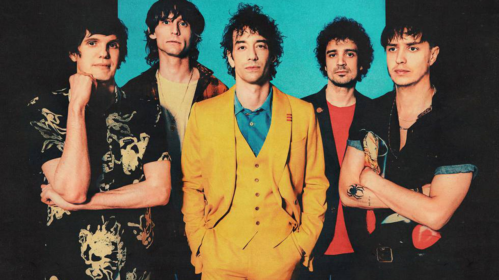

Una de las bandas más famosas de la escena neoyorquina de la década de los 2000

Integrantes de izquierda a derecha: Nikolai Fraiture, Nick Valensi, Albert hammond Jr., Fabrizio Moretti y Julian Casablancas